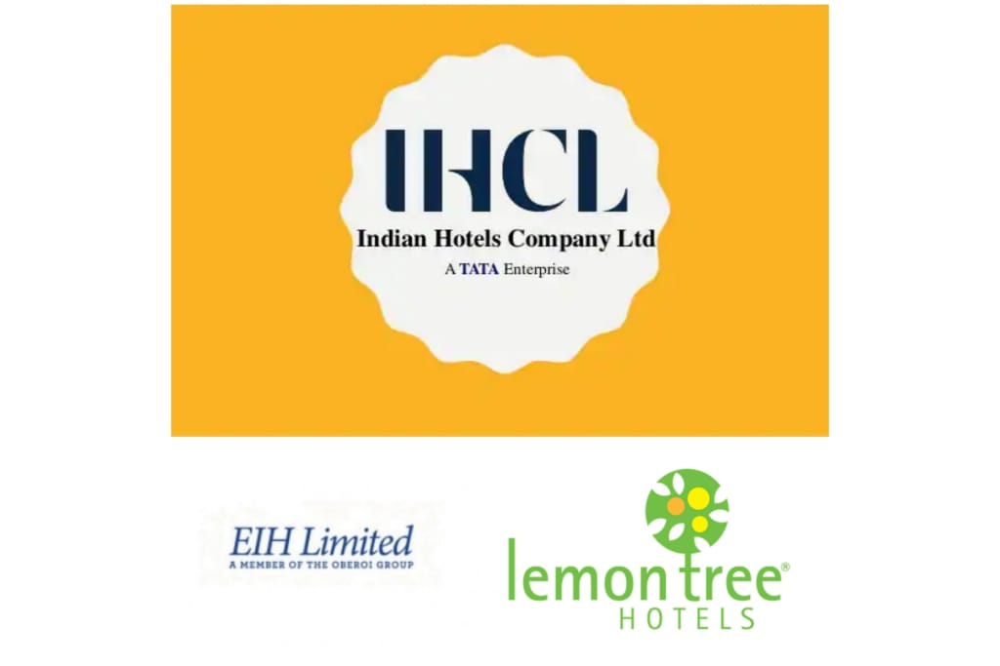

Being Data Analyst, We can be very versatile in our field, so I have chosen to Analyse one of my favourite modes of analysis: the Fundamental Analysis of a company.
OVERVIEW
ITC is India's one of the largest conglomerates which have a well-diversified business model. Also, It has been one of the hottest topics for discussion among Investors in Dalal Street. So today we are going to Analyse the company especially to read into the financial numbers and conclude how each business vertical of the company are performing
APPROACH
For the fundamental analysis, 10-year Segment wise data was collected from the corresponding annual reports of ITC as well as from other peer companies. This data was then processed in spreadsheets and data visualisation objects for the analysis was drawn from it. The link to the workbook is given here
ANALYSIS
From the above Pie chart, it is clear that ITC has 5 major horizontals: Cigarettes, FMCG, Paperboard, Agribusiness and hotel chains.Cigarette
FMCG
Let's Look ITC's FMCG segment growth over past 10 years.
By looking at the 10-year growth of the FMCG segment which is shown below, we can see healthy growth from a loss-making to compound growth, ITC has clearly unlocked its potential in the FMCG segment
FMCG Peer Analysis
We have took 4 companies as peer for ITC Fmcg segment. They are:
Profitability
Fast Moving Consumer Goods (FMCG) is comparatively a low margin business model. Here We have taken the average Profit before Tax (PBT) margin of these 5 companies as the Industry average and compared it with the ITC-FMCG segment
So, from the above graph, it is clear that ITC has a margin lower than the industry average which is CAUTIOUS. But this can be termed in for the Brand formation and initial cost of Setting up the distribution network. We can come to this conclusion because of 2 reasons, one being the Profitability graph shown at the beginning of ITC FMCG segment, and next being the Revenue generated by ITC, lets check it
So our 2nd reason is being concreted here, As you can see in this 10 years period ITC has emerged as a Market leader in Terms of Revenue generated
HOTELS
Here also it will good if we compare the performance of ITC Hotel wing with other industry players. Sow we can take EIH Hotels, Indian hotels, and Lemon Tree hotels as peer companies. Also only data till March,2020 is considered because almost all hotel chains were shut down due to Covid-19 pandemic
Now, Let's look upon their hotel dimensions
| Company | Total Hotel | Total Room |
|---|---|---|
| Indian Hotels | 166 | 19,425 |
| ITC Hotels | 108 | 10,200 |
| Lemon Tree Hotels | 80 | 8,006 |
| EIH Hotels | 31 | 4,935 |
Return On Asset
Return On Asset (ROA) is a profitability ratio which can be defined as for a 100Rs of assets owned by the company how much profit are they able to generate.In the graph we have plotted ROA of each hotel to the corresponding year.
Decrease in FY20 can be attributed to Covid-19 OutbreakPAPERBOARD
Itc's Paperboard portfolio consists of Value-added paperboards, Speciality paper - Pharma & Decor segment, Recyclable board, Sustainable boards. Company is leader in country in means of volume, but for us it is essential to compare with peers in the industry
So we can take JK paper, Sehasayee, Emami paper, and paper wing of Century, and ITC itself
So by seeing PBT margin , you could have guessed ITC having a strong profitability comparing to peer, but it is not growing as of the peer but a slight flat growth
what is Asset Turnover Ratio in percent? Take an example for a company having a ratio of 75 says that , for 100 rupee of asset company is able to generate 75/- as revenue.
Financial ratios always give insight either we compare it over the time of the company itself, it even gives deeper value when we compare with peer companies
SO ITC has a good Asset turnover ratio or we can say slightly above the industry average
AGRI BUSINESS
ITC Agri business consists of exports of Wheat , Rice and oilseeds, as well as domestic business. It also include high margin businesses like Value added spices
In an Investor presentation of ITC, Company had presented the profitability of each horizontals in the Agri vertical.
It is valid that currently, ITC has a huge proportion of low margin products because by the graph shown below, the gap between a revenue bar and its corresponding PBT bar is very high.
So this decreasing trend of Margin can be again validated by a dedicated margin chart shown below. Even though Revenue is increasing over the year, profit cannot grow in that pace
Now let's look Asset turnover ratio, so earlier we have found increasing revenue for agri business over time this can be validated as it is being flat or bit raising
It may be due to the reason that both assets of Agri business as well as the revenue is being increased in a similar pace
TAKEAWAYS
- Ciggrate business being the major contributor for ITC's profit face many headwinds, such as high taxation and even legal cigrattes only account for 1/10th the total tobacco consumed in India
- future of Hotels is uncertain, how Hotels manage the post-covid era is a key decison
- Out of the 5 pillars of ITC, we came to see strong growth in FMCG even an expontial growth
- I personally feel FMCG, Agro, and Paperboard be a good business for the future, but the performance of Agro and paperboard over the horizon of time is average.
- A famous quote is as follows "By the business not the stock", So you can buy ITC if you see a future in ITC's product portfolio
As an INvestor, I would like to add on that this is only quantitative part of fundamental analysis, Qualitative part that is Managment thoughts on product portfolio, their future perspective because it is what qualitative part of company which shows as data in coming year
so Lets conclude the Analysis being going over the Technical chart